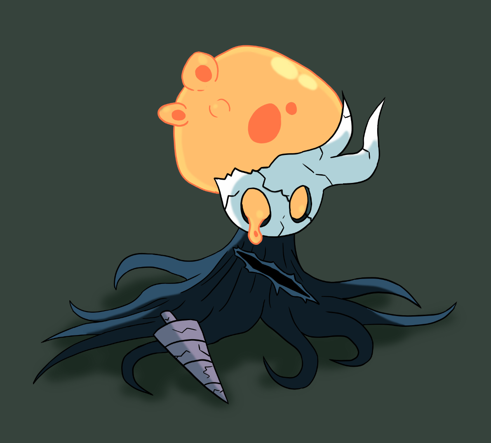
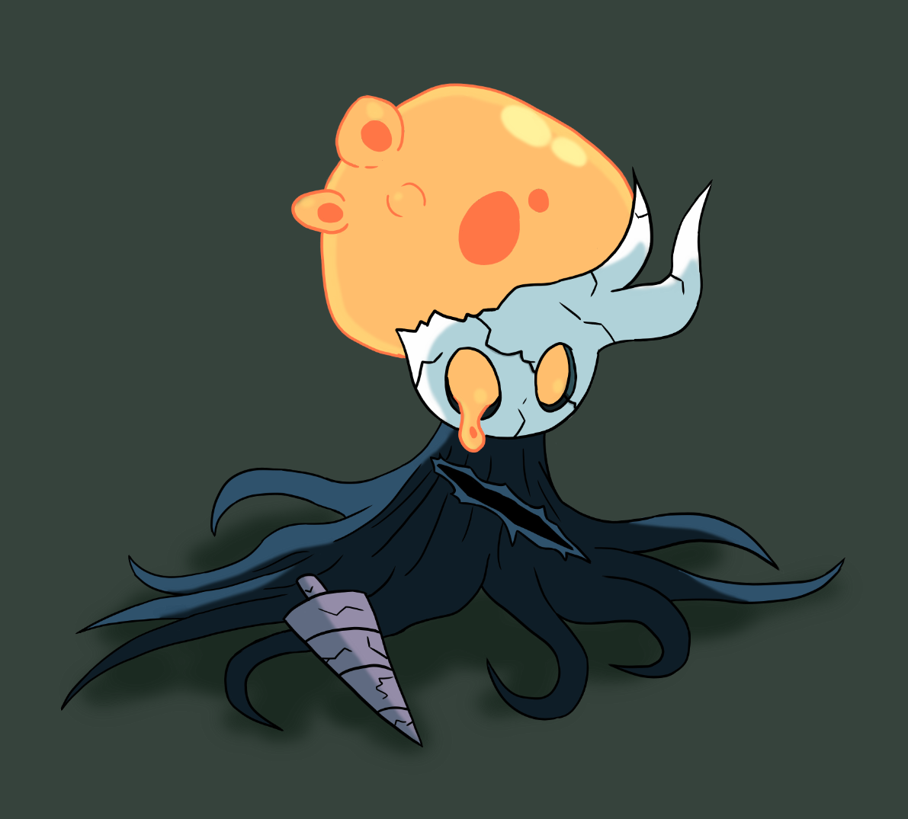
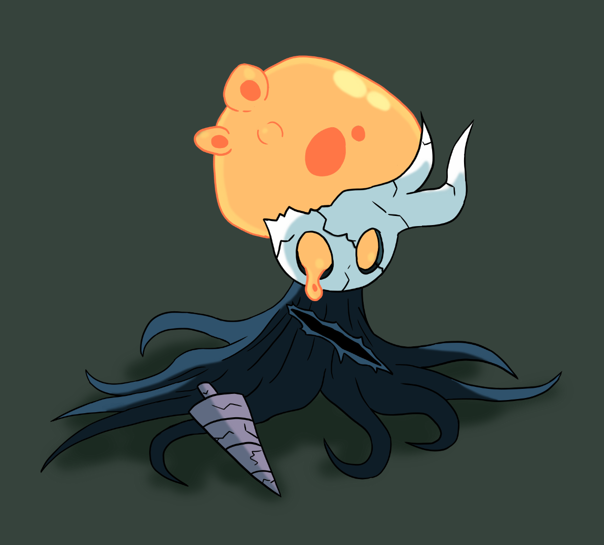

A lot of these top works were drawings I made based on games that I made videos on. For the one on the left it's a climactic showdown between a late-game boss and the player. The boss looming in the distance with light behind it is meant to be intimidating and a symbol of the challenge ahead. The player in the foreground bravely raisng it's sword is a symbol of how the player faces the reign of this boss in the game, without spoiling too much. Below you'll be able to see some more thumbnail images I made for different games.
